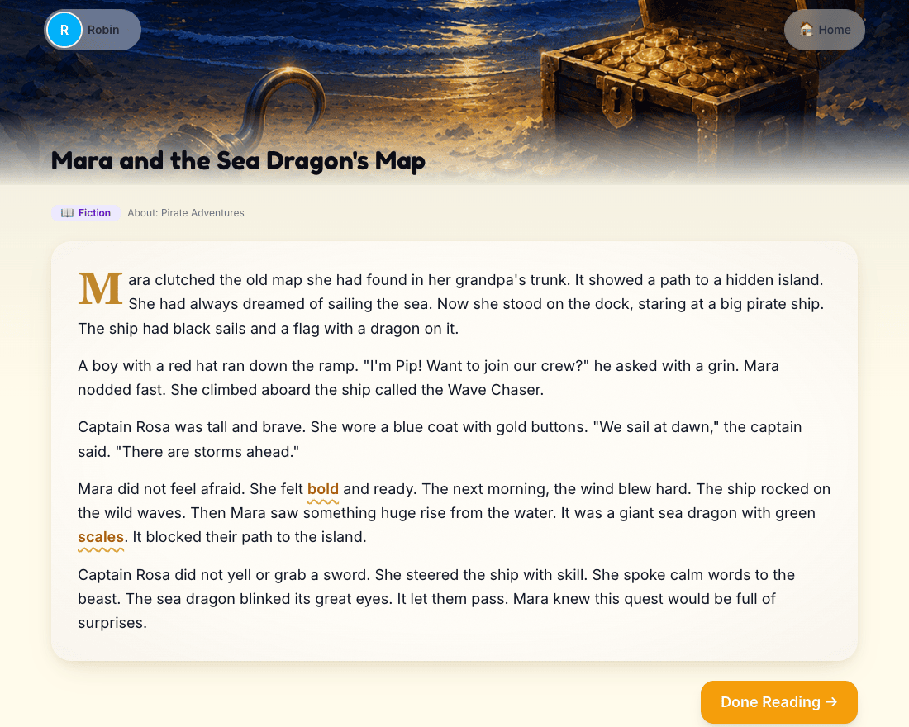
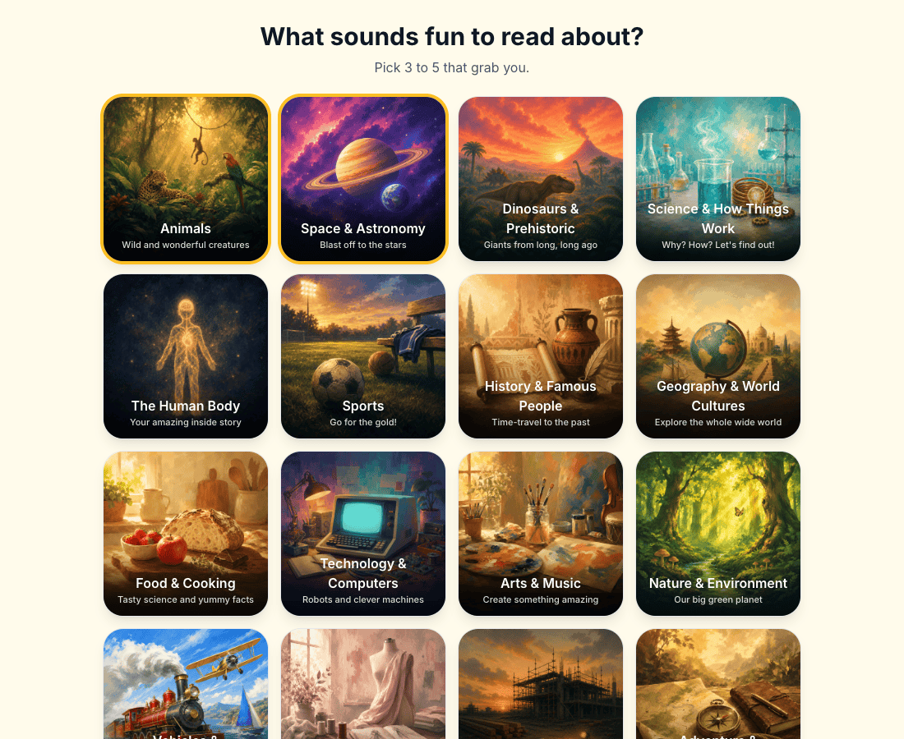
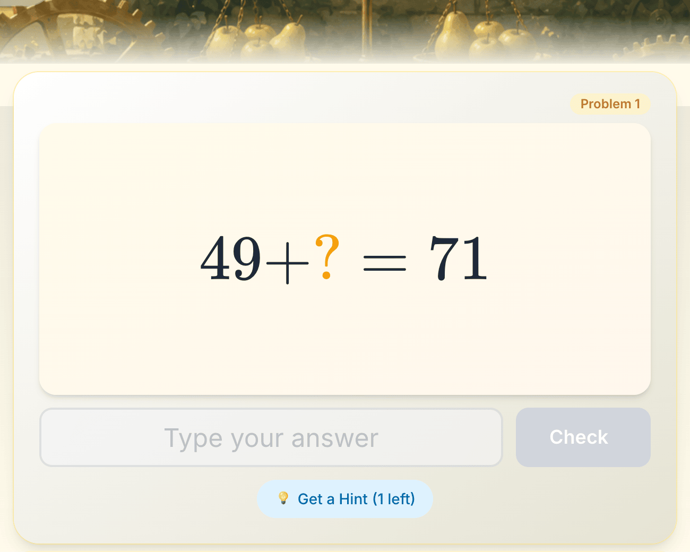
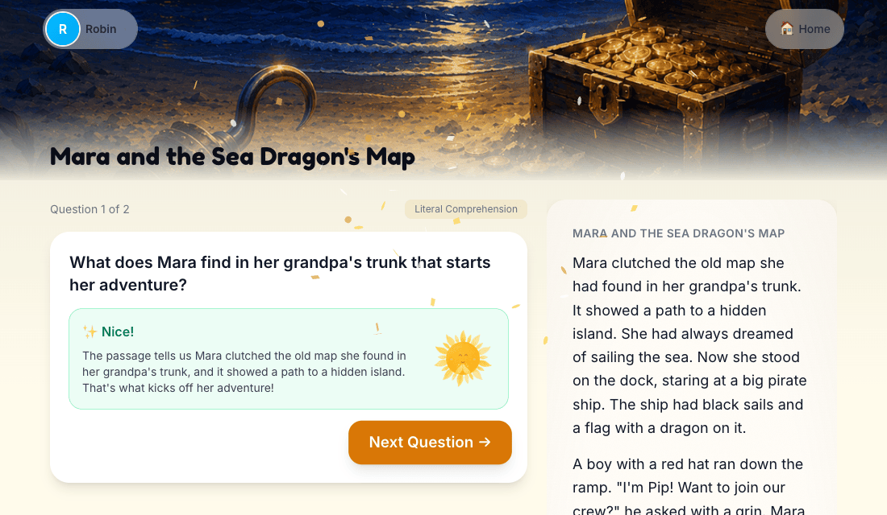
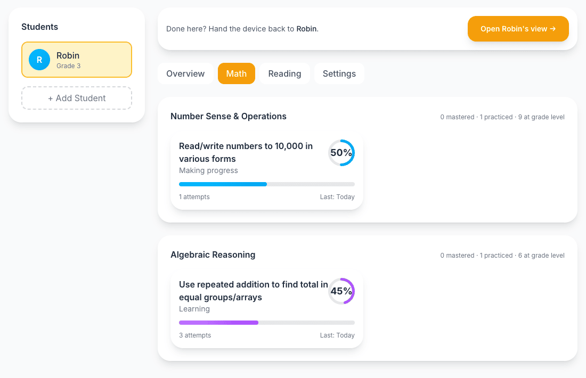
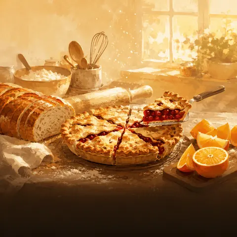
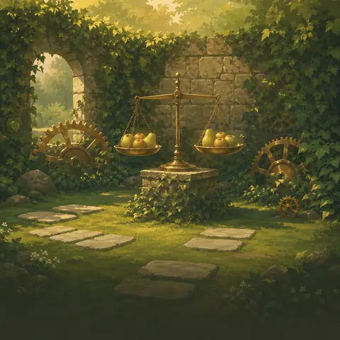

Sunny Personal Tutor · closed beta Q4 2026
An educational harness for AI.
Sunny turns AI into a patient reading and math teacher for kindergarten through fifth grade. It decides what each student learns next, works out the right answers before the AI says a word, checks everything the AI writes, and keeps every student safe.
- narrated lessons
- 100+
- animated chapters
- 300+
- standards-aligned math skills
- 188
- lines voiced by Sunny
- 5,500+
01 What we've built
Lessons that move. Drawn live, voiced by Sunny.
Sunny teaches new ideas with short animated lessons, each one a little story on a live stage: cubes tip a balance, a cookie is cut into fair shares, a fraction wall lines up its pieces. Students make their own calls along the way, and Sunny talks them through every step.
-
Exact by construction
Every picture is drawn from the lesson's exact numbers. Seven counters are always seven, and three fourths is always three of four equal parts.
-
Students make the call
Lessons stop for "your turn" moments. A wrong pick gets a kind nudge and the lesson waits until the student finds the right one.
-
Help that climbs
Stuck on a practice problem? Help steps up: a hint, then "watch how" with an example of the same kind, then "let's do yours together."
02 Inside Sunny
Reading they choose. Math at their pace.
Students pick what they love to read about, and Sunny writes stories and articles around it at exactly their level. Math practice adapts skill by skill. Parents see the whole picture; students see encouragement.







03 Why a harness
Fluency is not teaching.
AI can explain anything, and be wrong about it with exactly the same confidence. For an adult, that's an inconvenience. For a seven-year-old learning subtraction for the first time, a wrong answer delivered warmly is worse than no answer at all.
Produces math that sounds right and isn't.
Sunny works out the right answer first. The AI then explains it clearly, in words that fit the student's age.
Drifts wherever the conversation goes.
Every lesson comes from a structured, standards-aligned plan, so skills build in the right order.
Guesses at what a student already knows.
Sunny gets to know each student: what they've mastered, what's still shaky, and what they're ready for next.
Writes whatever it writes, and you find out afterwards.
Nothing reaches a student unchecked. AI output that misses the mark is sent back, and students only see explanations that are right.
Starts every session from nothing.
Progress carries forward, so every session picks up right where the last one left off.
04 How Sunny works
Layers, not prompts.
Sunny treats the AI as one part of a larger system, not the whole thing. Here is one hint on its way to a second grader. Watch what happens when the AI's first draft gives the answer away.
-
Curriculum
Grade 2 · find the missing number
49 + ? = 71 -
Correctness
Worked out by Sunny before the AI says a word
? = 2249 → 50 → 71 -
The AI writes
Count up from 49 and you'll land on 22! Start at 49. How far is it to 50? Then how far from 50 to 71?
-
Checks
- Doesn't give the answer away
- Every equation is true
- Reads at a grade 2 level
-
The student sees
Start at 49. How far is it to 50? Then how far from 50 to 71?
If a rewrite still misses, Sunny falls back to a hint written by people. The AI never grades a math answer.
-
01
Curriculum
A map of 188 math skills, grade by grade, aligned to published state standards. Sunny chooses the next skill; the AI never decides what school looks like.
-
02
Correctness
The answer to every problem, and the steps to get there, are worked out before the AI is asked for a single word. Accuracy is settled before the lesson is written.
-
03
Verification
Everything the AI writes is checked for answer leaks, false arithmetic, invented claims and reading level before it's shown. Anything that falls short goes back with the reason.
-
04
Grounding
Lessons about the real world are built from vetted reference material rather than the AI's memory, so a student exploring a favorite subject gets something new, and true.
-
05
Safety
Anything a student types is screened before a lesson is written, with the bar set for their age. When in doubt, it fails closed. Safety comes before the writing, not after it.
-
06
Mastery that sticks
Mastery is measured by what a student keeps: a skill only counts as mastered after a hint-free review days later. Knowing something on Friday isn't the same as knowing it in March.
05 What's next In development
A picture for every "I don't get it."
Every student gets stuck somewhere different. We're teaching Sunny to draw on the spot: when a student is confused, Sunny works out what tripped them up, draws the picture that clears it up, and walks them through it step by step.
Isn't 1/3 bigger than 1/2? 3 is bigger than 2.
They think a bigger bottom number means a bigger piece.
See? More pieces means smaller pieces. 1/2 is bigger than 1/3.
- Both bars are the same size
- Every piece is cut evenly
- Matches the math: 1/2 > 1/3
06 Built to last
It gets better as AI does.
Sunny isn't built around any one AI. It can teach reading and math with different AI behind the scenes, held to the same high standards. When more capable AI arrives, Sunny evolves to teach students better without starting over.
The curriculum, the safety standards, the quality checks, and everything we've learned about how students actually learn are built to last.
Better AI comes in. The teaching stays.
-
Built to welcome better AI
Sunny isn't tied to any one AI. When a better one comes along, it slots right in, and everything students rely on stays exactly where it was.
-
Better, never just different
Before any new AI gets to teach a student, it has to meet the same standards as the one it's replacing, on the same evals. No surprises, no backsliding.
-
The parts that last
The curriculum, the checking, and the safety are ours, and they keep getting better year after year, no matter what AI is inside.
07 Join the beta
Closed beta begins Q4 2026.
Sunny opens to a small group of families in the final quarter of 2026. Places are limited, and every account is set up and managed by a parent.
If you'd like your family to be considered, leave your email and we'll be in touch when places open. Parents and guardians only, please; this form isn't for students.
Beta waitlist
Trouble with the form? Open it in a new tab.
Lilac Labs builds software and the infrastructure under it.